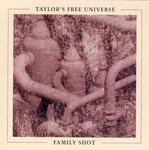

| Artist: | Taylor s Free Universe |
| Title: | Family Shot |
| Label: | Marvel Of Beauty MOBCD 013 |
| Length(s): | 55 minutes |
| Year(s) of release: | 2005 |
| Month of review: | [11/2005] |
| 1) | Strategy | 2.26 |
| 2) | M'Fisto Rubberphunk | 15.09 |
| 3) | Angel Stairs | 3.37 |
Nine Nice 'n' Easy Pieces
| 4) | First Piece | 0.23 |
| 5) | Second Piece | 0.20 |
| 6) | Third Piece | 0.20 |
| 7) | Fourth Piece | 0.31 |
| 8) | Fifth Piece | 0.40 |
| 9) | Sixth Piece | 1.12 |
| 10) | Seventh Piece | 0.48 |
| 11) | Eighth Piece | 1.36 |
| 12) | Ninth Piece | 3.55 |
| 13) | Like A Nervous Car Wreck | 4.05 |
| 14) | The Elephant Cure | 7.19 |
| 15) | Z Return | 13.05 |
Angel Stairs continues in this vein, very fiddly and not very exciting. We then come to the Nine Nice 'n' Easy Pieces, the first few of which we run through at high pace: these first pieces are all rather chaotic, sharing the dark somber sound with the earlier tracks, but having more reed instruments running around. On the sixth piece the music becomes more forceful, also because of the guitar setting in. Piece seven is back to bass work and a bit of noodling. Only the ninth piece has a respectable length of almost four minutes. Before that piece number eight is an experimental piece with backward played material. Piece number nine is back to atmospherics, again mainly in the Crimson vein.
Like A Nervous Car Wreck takes us out of the short pieces. With a title like this, you expect some harrowing material, but is all rather psychey and Frippian. The bass is so prominent at the end, that I also had to think of Levin/Gorn/Marotta. The Elephant Cure opens with noodling on the horns, and military drums. The second half is nicer. Here there is a tense brooding feeling, because of the sounds and effects in the back. Z Return is the long closer. A rather percussive and chaotic piece. Again, it does not do much for me. I need more melody and a bit of power too.